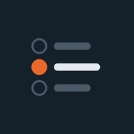

<!doctype html>
<html lang="pl">
<head>
<meta charset="utf-8">
<meta name="viewport" content="width=device-width, initial-scale=1, viewport-fit=cover">
<meta name="theme-color" content="#EDF1F4">
<title>AI Quiz</title>
<link rel="icon" type="image/svg+xml" href="favicon.svg">
<link rel="apple-touch-icon" href="apple-touch-icon.png">
<link rel="manifest" href="manifest.json">
<meta name="mobile-web-app-capable" content="yes">
<meta name="apple-mobile-web-app-capable" content="yes">
<meta name="apple-mobile-web-app-status-bar-style" content="default">
<meta name="apple-mobile-web-app-title" content="AI Quiz">
<script>
// Motyw przed pierwszym malowaniem, żeby strona nie mrugała jasnym tłem
try { const t = JSON.parse(localStorage.getItem("quiz.theme"));
  document.documentElement.dataset.theme = t || (matchMedia("(prefers-color-scheme: dark)").matches ? "dark" : "light");
} catch { document.documentElement.dataset.theme = "light"; }
</script>
<!-- Bez internetu czcionki się nie wczytają i strona użyje systemowych -->
<link rel="preconnect" href="https://fonts.googleapis.com">
<link rel="preconnect" href="https://fonts.gstatic.com" crossorigin>
<link rel="stylesheet" crossorigin href="https://fonts.googleapis.com/css2?family=Atkinson+Hyperlegible+Next:wght@400;500;600;700&family=Bricolage+Grotesque:opsz,wght@12..96,600;12..96,700;12..96,800&display=swap">
<style>
/* Motyw jasny (domyślny) */
:root {
  --bg: #EDF1F4; --card: #FFFFFF; --card2: #F6F8FA; --soft: #E7ECF0; --ink: #14202A; --muted: #5A6772; --line: #D3DBE1; --line2: #B8C3CC;
  --ok: #1C8A55; --okbg: #E3F3EA; --bad: #CC3D33; --badbg: #FBE8E6; --warn: #B45309; --on: #FFFFFF;
  --glass: rgba(237, 241, 244, .82); --shadow: 0 1px 2px rgba(20, 32, 42, .06), 0 8px 24px -12px rgba(20, 32, 42, .18);
  --display: "Bricolage Grotesque", "Segoe UI", system-ui, sans-serif;
  --text: "Atkinson Hyperlegible Next", "Atkinson Hyperlegible", system-ui, -apple-system, "Segoe UI", Roboto, sans-serif;
  --w: 760px; --hd: 58px; --hd-gap: 8px; --r: 18px; --ease: cubic-bezier(.22, 1, .36, 1);
  color-scheme: light;
}
/* Motyw ciemny */
:root[data-theme="dark"] {
  --bg: #0A0B0E; --card: #14161B; --card2: #1A1D23; --soft: #20242B; --ink: #ECEEF2; --muted: #969CA7; --line: #262A31; --line2: #3A3F48;
  --ok: #3DD68C; --okbg: #11291D; --bad: #F87171; --badbg: #2E1416; --warn: #FBBF24; --on: #0A0B0E;
  --glass: rgba(10, 11, 14, .78); --shadow: 0 1px 2px rgba(0, 0, 0, .4), 0 10px 30px -14px rgba(0, 0, 0, .7);
  color-scheme: dark;
}
/* Kolor przedmiotu: na ciemnym tle rozjaśniony, żeby miał kontrast */
@property --sc { syntax: "<color>"; inherits: true; initial-value: #c2410c; } /* zarejestrowany kolor da się płynnie zmieniać */
:root, .tint { --accent: var(--sc, #c2410c); }
:root[data-theme="dark"], :root[data-theme="dark"] .tint { --accent: color-mix(in oklab, var(--sc, #c2410c) 72%, #fff); }

* { box-sizing: border-box; }
html { -webkit-text-size-adjust: 100%; -webkit-tap-highlight-color: transparent; }
body { margin: 0; min-height: 100dvh; background: var(--bg); color: var(--ink); font: 17px/1.55 var(--text); }
body::before { content: ""; position: fixed; inset: 0; z-index: -1; pointer-events: none;
               background: radial-gradient(110% 55% at 50% -12%, color-mix(in srgb, var(--accent) 13%, transparent), transparent 70%); }
button { font: inherit; color: inherit; }
:focus-visible { outline: 3px solid var(--accent); outline-offset: 2px; }
code { background: var(--soft); border: 1px solid var(--line); border-radius: 5px; padding: 0 4px; font-size: 90%; }
/* Przejścia między ekranami (View Transitions): stary ekran gaśnie, nowy wjeżdża; nagłówek zostaje na miejscu */
#hd { view-transition-name: hd; }
@media (max-width: 699px) { .dock { view-transition-name: dock; } } /* dolny pasek telefonu też stoi w miejscu */
::view-transition-group(*) { animation-duration: .25s; animation-timing-function: var(--ease); }
html[data-vt="page"]::view-transition-old(root) { animation: vt-out .12s ease-in both; }
html[data-vt="page"]::view-transition-new(root) { animation: vt-rise .25s var(--ease) both; }
html[data-vt="fwd"]::view-transition-old(root) { animation: vt-to-left .12s ease-in both; }
html[data-vt="fwd"]::view-transition-new(root) { animation: vt-from-right .25s var(--ease) both; }
html[data-vt="back"]::view-transition-old(root) { animation: vt-to-right .12s ease-in both; }
html[data-vt="back"]::view-transition-new(root) { animation: vt-from-left .25s var(--ease) both; }
/* Zmiana motywu: nowy motyw odsłania się kołem od przycisku, bez przenikania kolorów */
html[data-vt="theme"]::view-transition-old(root), html[data-vt="theme"]::view-transition-new(root) { animation: none; mix-blend-mode: normal; }
html[data-vt="theme"] #hd, html[data-vt="theme"] .dock, html[data-vt="theme"] #toast { view-transition-name: none; }
.ico { display: block; flex: none; }
[hidden] { display: none !important; }

/* Szkielet aplikacji */
#shell { max-width: var(--w); margin: 0 auto; }
@media (min-width: 700px) { body.running { --w: 960px; } } /* test na komputerze: szersza, stała kolumna; nic nie skacze między pytaniami */
/* Nagłówek: pływająca zaokrąglona belka z odstępem od góry, wyrównana do krawędzi treści */
#hd { position: sticky; top: 0; z-index: 20; padding: calc(env(safe-area-inset-top) + var(--hd-gap)) 16px 0; pointer-events: none; } /* przezroczysty odstęp nie łapie kliknięć */
.hd-in { pointer-events: auto; max-width: calc(var(--w) - 32px); margin: 0 auto; height: var(--hd); display: flex; align-items: center; gap: 10px; padding: 0 8px;
         border: 1px solid var(--line); border-radius: 21px; background: color-mix(in srgb, var(--card) 78%, transparent); box-shadow: var(--shadow);
         -webkit-backdrop-filter: blur(10px); backdrop-filter: blur(10px); }
@media (min-width: 700px) { #hd { padding-inline: 24px; } .hd-in { max-width: calc(var(--w) - 48px); } }
@media (max-width: 699px) { /* telefon: blur przy przewijaniu przycina płynność, więc tło prawie pełne */
  .hd-in { background: color-mix(in srgb, var(--card) 96%, transparent); -webkit-backdrop-filter: none; backdrop-filter: none; }
  .dock { background: color-mix(in srgb, var(--bg) 97%, transparent); -webkit-backdrop-filter: none; backdrop-filter: none; } }
.hd-in > .brand, .hd-in > .hd-mid:first-child { padding-left: 8px; } /* sam tekst nie dotyka zaokrąglenia */
.hd-mid { flex: 1; min-width: 0; display: flex; align-items: center; gap: 10px; }
.hd-title { font: 700 18px/1.2 var(--display); white-space: nowrap; overflow: hidden; text-overflow: ellipsis; }
.hd-title .dot { display: inline-block; width: 9px; height: 9px; border-radius: 50%; background: var(--accent); margin-right: 8px; vertical-align: 2px; }
.brand { font: 800 21px/1 var(--display); letter-spacing: -.02em; }
.brand b { color: var(--accent); }
.hd-sub { color: var(--muted); font-size: 14px; white-space: nowrap; overflow: hidden; text-overflow: ellipsis; }
.ib { flex: none; display: grid; place-items: center; width: 42px; height: 42px; padding: 0; border-radius: 13px; cursor: pointer;
      border: 1px solid var(--line); background: var(--card); color: var(--muted); transition: transform .12s, color .2s, border-color .2s; }
.ib:active { transform: scale(.92); }
@media (hover: hover) { .ib:hover { color: var(--ink); border-color: var(--line2); } }
.screen { padding: 14px 16px calc(var(--dockh, 0px) + 28px + env(safe-area-inset-bottom)); }
@media (min-width: 700px) { .screen { padding: 22px 24px calc(var(--dockh, 0px) + 32px); } }

/* Dolny pasek z akcjami, jak w aplikacji */
.dock { position: fixed; left: 0; right: 0; bottom: 0; z-index: 15; padding: 10px 16px calc(10px + env(safe-area-inset-bottom));
        background: var(--glass); -webkit-backdrop-filter: blur(10px); backdrop-filter: blur(10px);
        border-top: 1px solid var(--line); transition: background-color .25s, border-color .25s; }
.dock-in { max-width: calc(var(--w) - 48px); margin: 0 auto; display: flex; flex-direction: column; gap: 10px; }
.dock-row { display: flex; gap: 10px; }
.dock-row .btn { flex: 1; }
.dock-row .btn.primary:only-child { margin-left: auto; } /* jeden przycisk „dalej” zawsze po prawej */
@media (min-width: 700px) {
  .dock-row { justify-content: space-between; }
  .dock-row .btn { flex: none; min-width: 180px; }
  /* Test na komputerze: przyciski zaraz pod pytaniem zamiast przy dolnej krawędzi okna */
  body.running .screen { padding-bottom: 16px; }
  body.running .dock { position: static; padding: 0 24px 40px; background: none; border: 0; -webkit-backdrop-filter: none; backdrop-filter: none; }
  body.running .dock-in { max-width: none; }
  body.running .dock.fb-on .dock-in { padding: 14px 16px; border-radius: var(--r); border: 1px solid; }
  body.running .dock.ok .dock-in { background: color-mix(in srgb, var(--ok) 12%, var(--card)); border-color: color-mix(in srgb, var(--ok) 40%, transparent); }
  body.running .dock.bad .dock-in { background: color-mix(in srgb, var(--bad) 10%, var(--card)); border-color: color-mix(in srgb, var(--bad) 40%, transparent); }
}
.dock.ok { background: color-mix(in srgb, var(--ok) 15%, var(--card)); border-top-color: color-mix(in srgb, var(--ok) 45%, transparent); }
.dock.bad { background: color-mix(in srgb, var(--bad) 13%, var(--card)); border-top-color: color-mix(in srgb, var(--bad) 45%, transparent); }
.dock.fb-on .dock-in { animation: rise .22s var(--ease) backwards; }
.dock-fb { display: flex; align-items: center; gap: 12px; font: 800 20px/1.2 var(--display); }
.dock-fb small { display: block; font: 500 15px/1.35 var(--text); color: var(--ink); margin-top: 2px; }
.dock.ok .dock-fb { color: var(--ok); }
.dock.bad .dock-fb { color: var(--bad); }
.dock-fb .mark { width: 34px; height: 34px; font-size: 18px; animation: pop .3s var(--ease); }
.dock.ok .btn.primary { background: var(--ok); box-shadow: 0 4px 0 color-mix(in srgb, var(--ok) 60%, #000); }
.dock.bad .btn.primary { background: var(--bad); box-shadow: 0 4px 0 color-mix(in srgb, var(--bad) 60%, #000); }

/* Przyciski */
.btn { display: inline-flex; align-items: center; justify-content: center; gap: 8px; min-height: 52px; padding: 12px 20px; cursor: pointer;
       border: 1.5px solid transparent; border-radius: 15px; font: 700 17px/1.2 var(--text); text-decoration: none;
       transition: transform .1s, box-shadow .1s, filter .15s, background-color .2s, border-color .2s; }
.btn.primary { background: var(--accent); color: var(--on); box-shadow: 0 4px 0 color-mix(in srgb, var(--accent) 62%, #000); }
.btn.primary:active:not(:disabled) { transform: translateY(3px); box-shadow: 0 1px 0 color-mix(in srgb, var(--accent) 62%, #000); }
.btn.ghost { background: var(--card); border-color: var(--line); box-shadow: 0 3px 0 var(--line); }
.btn.ghost:active:not(:disabled) { transform: translateY(2px); box-shadow: 0 1px 0 var(--line); }
.btn.small { min-height: 36px; padding: 6px 12px; border-radius: 11px; font-size: 15px; font-weight: 600; box-shadow: none; }
.btn.small:active:not(:disabled) { transform: scale(.96); box-shadow: none; }
.btn.danger { color: var(--bad); }
.btn.wide { width: 100%; min-height: 56px; font-size: 18px; }
.btn:disabled { opacity: .45; cursor: default; box-shadow: none; }
@media (hover: hover) { .btn.primary:hover:not(:disabled) { filter: brightness(1.07); } .btn.ghost:hover:not(:disabled) { border-color: var(--line2); } }
.row { display: flex; flex-wrap: wrap; gap: 10px; }

/* Wspólne elementy */
.panel { background: var(--card); border: 1px solid var(--line); border-radius: var(--r); box-shadow: var(--shadow); }
.hero { display: flex; align-items: center; gap: 16px; padding: 16px; border-radius: var(--r); border: 1px solid var(--line); box-shadow: var(--shadow);
        background: linear-gradient(150deg, color-mix(in srgb, var(--accent) 14%, var(--card)), var(--card) 65%); animation: lift .25s var(--ease) backwards; }
@media (min-width: 700px) { .hero { padding: 20px 22px; gap: 20px; } }
.hero-txt { min-width: 0; }
.title { font: 800 clamp(22px, 5.6vw, 32px)/1.12 var(--display); letter-spacing: -.02em; margin: 0; text-wrap: balance; }
.lead { color: var(--muted); margin: 6px 0 0; }
.chips { display: flex; flex-wrap: wrap; gap: 6px; margin: 10px 0 0; padding: 0; list-style: none; }
.chip { font-size: 13px; font-weight: 600; line-height: 1; padding: 7px 10px; border-radius: 999px; background: var(--card); border: 1px solid var(--line); color: var(--muted); font-variant-numeric: tabular-nums; }
.block { margin-top: 20px; }
.lbl { font: 700 13px/1.2 var(--text); text-transform: uppercase; letter-spacing: .08em; color: var(--muted); margin: 0 0 8px; }
.lbl-row { display: flex; align-items: center; justify-content: space-between; gap: 12px; margin-bottom: 8px; }
.lbl-row .lbl { margin: 0; }
.hint { color: var(--muted); font-size: 15px; margin: 8px 0 0; }
.ring { position: relative; flex: none; }
.ring svg { display: block; width: 100%; height: 100%; transform: rotate(-90deg); }
.ring circle { fill: none; }
.ring-bg { stroke: color-mix(in srgb, var(--accent) 16%, var(--soft)); }
.ring-fg { stroke: var(--accent); stroke-linecap: round; transition: stroke-dashoffset .6s var(--ease); }
.ring-n { position: absolute; inset: 0; display: grid; place-items: center; font-family: var(--display); font-weight: 800; letter-spacing: -.03em; font-variant-numeric: tabular-nums; }
.tiles { display: grid; grid-template-columns: repeat(3, 1fr); gap: 8px; margin-top: 8px; }
.tiles.two { grid-template-columns: 1fr 1fr; }
.tile { padding: 10px 12px; animation: lift .25s var(--ease) backwards; animation-delay: calc(var(--d, 0) * 30ms + 40ms); }
.tile b { display: block; font: 800 24px/1.1 var(--display); letter-spacing: -.02em; font-variant-numeric: tabular-nums; }
.tile span { color: var(--muted); font-size: 14px; }
.tile.ok b { color: var(--ok); }
.tile.bad b { color: var(--bad); }
.mark { flex: none; display: grid; place-items: center; width: 24px; height: 24px; border-radius: 50%; color: var(--on); font: 700 14px/1 var(--text); }
.ok > .mark, .ok .mark { background: var(--ok); }
.bad > .mark, .bad .mark { background: var(--bad); }
.badge { font: 700 12px/1 var(--text); background: var(--bad); color: var(--on); border-radius: 999px; padding: 4px 8px; }

/* Ekran główny: karty przedmiotów */
.cards { display: grid; grid-template-columns: 1fr 1fr; gap: 8px; }
@media (min-width: 700px) { .cards { grid-template-columns: repeat(3, 1fr); gap: 10px; } }
.card { position: relative; display: flex; flex-direction: column; gap: 4px; min-height: 112px; padding: 12px 14px 14px; color: inherit; text-decoration: none;
        border-radius: var(--r); border: 1px solid var(--line); box-shadow: var(--shadow); overflow: hidden;
        background: linear-gradient(165deg, color-mix(in srgb, var(--accent) 15%, var(--card)), var(--card) 62%);
        animation: lift .25s var(--ease) backwards; animation-delay: calc(var(--d) * 25ms + 40ms); transition: transform .15s, border-color .2s; }
.card:active { transform: scale(.97); }
@media (hover: hover) { .card:hover { border-color: var(--accent); transform: translateY(-3px); } }
.card-name { display: flex; align-items: center; gap: 8px; font: 800 clamp(15px, 4.4vw, 19px)/1.15 var(--display); letter-spacing: -.01em; overflow-wrap: anywhere; } /* „Przetwarzanie” mieści się w karcie telefonu */
.card-name::before { content: ""; flex: none; width: 9px; height: 9px; border-radius: 50%; background: var(--accent); }
.card-full { color: var(--muted); font-size: 13.5px; line-height: 1.3; display: -webkit-box; -webkit-line-clamp: 2; -webkit-box-orient: vertical; overflow: hidden; }
.card-meta { display: flex; justify-content: space-between; gap: 6px; margin-top: auto; padding-top: 8px; font-size: 13px; color: var(--muted); font-variant-numeric: tabular-nums; }
.card-pct.on { color: var(--accent); font-weight: 700; }
/* Postęp: cienka linia przy dolnej krawędzi karty */
.card-prog { position: absolute; left: 0; right: 0; bottom: 0; height: 3px; background: color-mix(in srgb, var(--accent) 14%, transparent); }
.card-prog i { display: block; height: 100%; background: var(--accent); border-radius: 0 3px 3px 0; transform-origin: left; animation: grow .5s var(--ease) backwards .1s; }
.card-meta .badge { align-self: center; } /* licznik błędów na dole karty: nazwa ma całą szerokość */
.card.empty { opacity: .55; box-shadow: none; }
.card.last { border-color: color-mix(in srgb, var(--accent) 55%, var(--line)); }
.bar { height: 6px; margin-top: 7px; background: color-mix(in srgb, var(--accent) 14%, var(--soft)); border-radius: 99px; overflow: hidden; }
.bar i { display: block; height: 100%; background: var(--accent); border-radius: inherit; transform-origin: left; animation: grow .5s var(--ease) backwards .1s; }
.foot { color: var(--muted); font-size: 14px; line-height: 1.5; margin: 20px 4px 0; }

/* Powiadomienie u góry: wysuwa się nad nagłówek i samo chowa */
#toast { position: fixed; z-index: 40; view-transition-name: toast; inset: 0 0 auto; padding: calc(env(safe-area-inset-top) + var(--hd-gap)) 16px 0; pointer-events: none;
         transform: translateY(calc(-100% - 12px)); transition: transform .22s cubic-bezier(.4,0,1,1); }
#toast.show { transform: none; transition: transform .35s cubic-bezier(.34,1.15,.64,1); }
.toast-in { pointer-events: auto; max-width: calc(var(--w) - 32px); margin: 0 auto; display: flex; align-items: center; gap: 12px; padding: 10px 8px 10px 12px; border-radius: 21px; touch-action: pan-x; }
@media (min-width: 700px) { #toast { padding-inline: 24px; } .toast-in { max-width: 520px; } }
.toast-in img, .toast-ico { display: grid; place-items: center; flex: none; align-self: flex-start; width: 44px; height: 44px; border-radius: 11px; }
.toast-ico { background: color-mix(in srgb, var(--accent) 16%, transparent); color: var(--accent); }
.toast-txt { flex: 1; min-width: 0; display: flex; flex-direction: column; }
.toast-txt b { font: 700 16px/1.25 var(--display); }
.toast-txt span { color: var(--muted); font-size: 14px; line-height: 1.35; }
.toast-txt span b { font: inherit; color: var(--ink); font-weight: 600; }
.toast-in .ib { width: 34px; height: 34px; border: 0; background: none; align-self: flex-start; }
@media (prefers-reduced-motion: reduce) { #toast, #toast.show { transition: none; } }
.steps { margin: 12px 0 0; padding-left: 22px; }
.steps li { margin: 10px 0; padding-left: 4px; }
.steps .ico { display: inline-block; vertical-align: -4px; color: var(--accent); }

/* Tryby */
.modes { display: flex; flex-direction: column; gap: 8px; }
.mode { display: flex; align-items: center; gap: 12px; width: 100%; padding: 12px; text-align: left; cursor: pointer;
        border: 1.5px solid var(--line); background: var(--card); border-radius: 16px; transition: border-color .2s, background-color .2s, transform .1s; }
.mode:active:not(:disabled) { transform: scale(.985); }
.mode .mi { flex: none; display: grid; place-items: center; width: 40px; height: 40px; border-radius: 12px; background: var(--soft); color: var(--muted); transition: background-color .2s, color .2s; }
.mode .mt { flex: 1; min-width: 0; }
.mode b { display: flex; align-items: center; gap: 8px; font: 700 17px/1.2 var(--display); }
.mode .md { display: block; color: var(--muted); font-size: 14.5px; line-height: 1.35; margin-top: 3px; }
.mode .radio { flex: none; width: 22px; height: 22px; border-radius: 50%; border: 2px solid var(--line2); transition: border-color .2s, box-shadow .2s; }
.mode[aria-checked="true"] { border-color: var(--accent); background: color-mix(in srgb, var(--accent) 8%, var(--card)); }
.mode[aria-checked="true"] .mi { background: var(--accent); color: var(--on); }
.mode[aria-checked="true"] .radio { border-color: var(--accent); box-shadow: inset 0 0 0 4px var(--card), inset 0 0 0 11px var(--accent); }
.mode:disabled { opacity: .45; cursor: default; }
@media (hover: hover) { .mode:hover:not(:disabled):not([aria-checked="true"]) { border-color: var(--line2); } }

/* Wykłady: wybór i postęp w jednym kafelku */
.lects { display: grid; grid-template-columns: repeat(auto-fill, minmax(160px, 1fr)); gap: 8px; }
@media (max-width: 420px) { .lects { grid-template-columns: 1fr 1fr; } }
.lect { display: grid; grid-template-columns: auto 1fr; grid-template-areas: "code num" "topic topic" "bar bar"; gap: 2px 8px;
        align-items: baseline; text-align: left; padding: 8px 10px; cursor: pointer;
        border: 1.5px solid var(--line); background: var(--card); border-radius: 13px; transition: border-color .2s, background-color .2s, transform .1s; }
.lect:active { transform: scale(.97); }
.lect .code { grid-area: code; font: 700 16px/1.2 var(--display); }
.lect .mnum { grid-area: num; justify-self: end; color: var(--muted); font-size: 14px; font-variant-numeric: tabular-nums; }
.lect .topic { grid-area: topic; color: var(--muted); font-size: 14px; line-height: 1.3; white-space: nowrap; overflow: hidden; text-overflow: ellipsis; }
.lect .mbar { grid-area: bar; height: 4px; margin-top: 7px; background: var(--soft); border-radius: 2px; overflow: hidden; }
.lect .mbar i { display: block; height: 100%; background: var(--ok); }
.lect[aria-pressed="true"] { border-color: var(--accent); background: color-mix(in srgb, var(--accent) 8%, var(--card)); }
.lect[aria-pressed="false"] .code { color: var(--muted); }

/* Liczba pytań */
.count { display: flex; align-items: center; flex-wrap: wrap; gap: 6px 14px; }
.stepper { display: inline-flex; border: 1.5px solid var(--line); border-radius: 14px; overflow: hidden; background: var(--card); }
.stepper button { width: 48px; height: 48px; border: 0; background: none; cursor: pointer; font-size: 22px; line-height: 1; }
.stepper button:active { background: var(--soft); }
.stepper input { width: 66px; border: 0; border-inline: 1.5px solid var(--line); background: none; color: var(--ink);
                 text-align: center; font: 800 19px var(--display); -moz-appearance: textfield; appearance: textfield; }
.stepper input::-webkit-inner-spin-button, .stepper input::-webkit-outer-spin-button { -webkit-appearance: none; margin: 0; }
.help { margin-top: 22px; padding-top: 12px; border-top: 1px solid var(--line); color: var(--muted); font-size: 15px; }
.help summary { cursor: pointer; }
.help ul { margin: 10px 0 0; padding-left: 18px; }
.help li { margin: 4px 0; }
.reset { margin-top: 10px; font-size: 15px; }
.reset p { margin: 0 0 8px; }

/* Test: pasek postępu w nagłówku */
.track { flex: 1; min-width: 0; display: flex; gap: 3px; align-items: center; height: 30px; }
.seg { flex: 1; min-width: 0; height: 100%; display: flex; align-items: center; }
.seg::after { content: ""; width: 100%; height: 8px; border-radius: 99px; background: var(--soft); transition: background-color .3s, transform .3s var(--ease); }
.seg.cur::after { background: color-mix(in srgb, var(--accent) 40%, var(--soft)); transform: scaleY(1.35); }
.seg.ok::after { background: var(--ok); }
.seg.bad::after { background: var(--bad); }
.seg.pop::after { animation: segpop .3s var(--ease); }
.track .bar { flex: 1; height: 8px; margin: 0; }
.track .bar i { animation: none; transition: width .25s var(--ease); }
/* Seria: stałe miejsce w nagłówku, więc pasek nie skacze; płomień pojawia się i znika płynnie */
.streak { flex: none; width: 52px; display: inline-flex; align-items: center; justify-content: flex-end; gap: 3px; color: var(--warn);
          font: 800 17px/1 var(--display); font-variant-numeric: tabular-nums;
          opacity: 0; transform: scale(.6); transition: opacity .2s var(--ease), transform .3s cubic-bezier(.34, 1.3, .64, 1); }
.streak.on { opacity: 1; transform: none; }
.streak.bump .ico { animation: bump .3s var(--ease); }

/* Pytanie */
.qmeta { display: flex; align-items: center; flex-wrap: wrap; gap: 6px 8px; margin: 0 0 10px; }
.pos { color: var(--muted); font-size: 15px; font-weight: 600; font-variant-numeric: tabular-nums; margin-right: 4px; }
.tag { font-size: 13px; font-weight: 700; line-height: 1; padding: 6px 10px; border-radius: 999px; border: 1px solid var(--line); background: var(--card); color: var(--muted); }
.tag.acc { color: var(--accent); border-color: color-mix(in srgb, var(--accent) 40%, transparent); background: color-mix(in srgb, var(--accent) 9%, var(--card)); }
.timer { margin-left: auto; min-width: 70px; text-align: center; font: 700 15px/1 var(--text); padding: 7px 11px; border-radius: 999px; /* stała szerokość: 10:00 → 9:59 nie przesuwa paska */ background: var(--card); border: 1px solid var(--line); font-variant-numeric: tabular-nums; }
.timer:empty { display: none; }
.timer.low { color: var(--bad); border-color: var(--bad); animation: blink 1s ease-in-out infinite; }
.q { font: 600 clamp(21px, 5.6vw, 24px)/1.38 var(--text); margin: 0 0 16px; text-wrap: pretty; }
@media (min-width: 700px) { .q { font-size: 28px; text-wrap: balance; } .opt { font-size: 19px; } }
.opts { display: flex; flex-direction: column; gap: 8px; }
.opt { display: flex; align-items: flex-start; gap: 14px; width: 100%; min-height: 52px; padding: 12px 14px; text-align: left; cursor: pointer; font-size: 18px; line-height: 1.45;
       scroll-margin: calc(var(--hd) + var(--hd-gap) + 12px) 0 calc(var(--dockh, 0px) + 12px); /* przewijanie do odpowiedzi omija nagłówek i dolny pasek */
       border: 1.5px solid var(--line); background: var(--card); border-radius: 16px; box-shadow: 0 3px 0 var(--line);
       animation: lift .22s var(--ease) backwards; animation-delay: calc(var(--i) * 30ms + 20ms);
       transition: border-color .15s, background-color .2s, box-shadow .1s, transform .1s, opacity .25s; }
.opts.still .opt { animation: none; }
.opt .k { flex: none; display: grid; place-items: center; width: 30px; height: 30px; margin-top: -2px; border-radius: 50%;
          border: 1.5px solid var(--line2); color: var(--muted); font: 700 14px/1 var(--display); text-transform: uppercase; transition: background-color .2s, border-color .2s, color .2s; }
.opts.multi .opt .k { border-radius: 9px; }
.opt .t { flex: 1; padding-top: 1px; }
.opt:active:not(:disabled) { transform: translateY(2px); box-shadow: 0 1px 0 var(--line); }
@media (hover: hover) { .opt:hover:not(:disabled) { border-color: var(--line2); background: var(--card2); } }
.opt[aria-pressed="true"] { border-color: var(--accent); background: color-mix(in srgb, var(--accent) 9%, var(--card)); box-shadow: 0 3px 0 color-mix(in srgb, var(--accent) 50%, transparent); }
.opt[aria-pressed="true"] .k { background: var(--accent); border-color: var(--accent); color: var(--on); animation: pop .2s var(--ease); }
.opt:disabled { cursor: default; color: inherit; }
.opt:disabled:not(.ok):not(.bad) { opacity: .5; }
.opt.ok { border-color: var(--ok); background: var(--okbg); box-shadow: 0 3px 0 color-mix(in srgb, var(--ok) 55%, transparent); animation: bounce .3s var(--ease); }
.opt.ok .k { background: var(--ok); border-color: var(--ok); color: var(--on); }
.opt.bad { border-color: var(--bad); background: var(--badbg); box-shadow: 0 3px 0 color-mix(in srgb, var(--bad) 55%, transparent); animation: shake .3s ease-out; }
.opt.bad .k { background: var(--bad); border-color: var(--bad); color: var(--on); }
.field { width: 100%; padding: 14px 16px; font: inherit; color: var(--ink); background: var(--card); border: 1.5px solid var(--line); border-radius: 16px; }
.field:focus { outline: none; border-color: var(--accent); }
.fb { margin-top: 16px; padding: 14px; border-radius: 16px; background: var(--card); border: 1px solid var(--line); animation: lift .2s var(--ease) backwards; }
.fb-head { display: flex; align-items: center; gap: 10px; margin: 0; font: 800 19px/1.2 var(--display); }
.fb.ok .fb-head { color: var(--ok); }
.fb.bad .fb-head { color: var(--bad); }
.fb-text { margin: 10px 0 0; }
.fb.info .mark { background: var(--accent); }
.src { display: flex; flex-wrap: wrap; gap: 4px 14px; color: var(--muted); font-size: 14px; margin: 10px 0 0; }
.src a { color: var(--accent); }

/* Okno: na telefonie wysuwa się od dołu */
.dlg { border: 1px solid var(--line); padding: 0; border-radius: 22px; background: var(--card); color: var(--ink); width: min(560px, calc(100vw - 32px));
       max-height: calc(100dvh - 48px); box-shadow: 0 30px 80px rgba(0, 0, 0, .35); }
.dlg::backdrop { background: rgba(5, 8, 12, .6); }
.dlg[open] { animation: lift .22s var(--ease); }
.dlg[open]::backdrop { animation: dlg-fade-in .22s ease-out; }
.dlg.out { animation: dlg-out .15s ease-in forwards; } /* zamykanie: okno opada i gaśnie, tło razem z nim */
.dlg.out::backdrop { animation: dlg-fade-out .15s ease-in forwards; }
.dlg-in { padding: 20px 20px 16px; }
.dlg-h { font: 800 21px/1.25 var(--display); margin: 0 0 8px; }
.dlg-in > p { margin: 0; }
.dlg .fb { margin: 0; padding: 0; border: 0; background: none; animation: none; }
.dlg .row { justify-content: flex-end; margin-top: 18px; }
@media (max-width: 599px) {
  .dlg { width: 100%; max-width: 100%; margin: auto 0 0; border-radius: 24px 24px 0 0; border-bottom: 0; max-height: 88dvh; }
  .dlg[open] { animation: sheet .28s var(--ease); }
  .dlg.out { animation: sheet-out .18s cubic-bezier(.4, 0, 1, 1) forwards; } /* telefon: arkusz zjeżdża w dół */
  .dlg-in { padding: 12px 20px calc(18px + env(safe-area-inset-bottom)); }
  .dlg-in::before { content: ""; display: block; width: 40px; height: 5px; border-radius: 99px; background: var(--line2); margin: 0 auto 16px; }
  .dlg .row .btn { flex: 1; }
}
.dlg-top { display: flex; align-items: flex-start; justify-content: space-between; gap: 12px; }
.dlg-top .dlg-h { margin: 0; }
.dlg-top .hint { margin: 2px 0 0; }
.dlg-top .ib { margin: -4px -6px 0 0; }
.navgrid { display: grid; grid-template-columns: repeat(auto-fill, minmax(44px, 1fr)); gap: 6px; margin-top: 16px; }
.legend { display: flex; flex-wrap: wrap; gap: 6px 16px; margin: 16px 0 0; color: var(--muted); font-size: 14px; }
.legend span { display: inline-flex; align-items: center; gap: 7px; }
.legend i { width: 14px; height: 14px; border-radius: 4px; background: var(--soft); box-shadow: inset 0 0 0 1px var(--line2); }
.legend i.filled { background: var(--accent); }
.legend i.cur { background: none; box-shadow: inset 0 0 0 2px var(--ink); }

/* Wynik */
.res-hero { flex-wrap: wrap; }
.res-txt { flex: 1; min-width: 180px; }
.big-line { font: 800 22px/1.25 var(--display); margin: 0; }
.verdict { display: inline-block; font-weight: 700; margin: 8px 0 0; padding: 5px 11px; border-radius: 999px; font-size: 15px; }
.verdict.pass { color: var(--ok); background: var(--okbg); }
.verdict.fail { color: var(--bad); background: var(--badbg); }
.verdict.none { color: var(--muted); background: var(--soft); }
@media (max-width: 520px) { .res-hero { flex-direction: column; text-align: center; } .res-txt { min-width: 0; } .res-txt .qmeta { justify-content: center; } }
.grid { display: grid; grid-template-columns: repeat(auto-fill, minmax(40px, 1fr)); gap: 6px; }
.sq { display: grid; place-items: center; aspect-ratio: 1; padding: 0; border: 0; border-radius: 11px; font: 700 15px/1 var(--display);
      animation: fill .2s var(--ease) backwards; animation-delay: calc(min(var(--d), 15) * 15ms + 100ms); } /* długi test nie czeka na ostatnie kwadraty */
.sq.ok { background: var(--okbg); color: var(--ok); }
.sq.bad { background: var(--bad); color: var(--on); }
.sq.skip, .sq.todo { background: var(--soft); color: var(--muted); }
.sq.filled { background: var(--accent); color: var(--on); }
.sq.cur { box-shadow: 0 0 0 2px var(--card), 0 0 0 4px var(--ink); }
.navgrid .sq { animation: none; }
button.sq { cursor: pointer; transition: transform .1s; }
button.sq:active { transform: scale(.9); }
.res-acts { display: flex; flex-wrap: wrap; gap: 8px; margin-top: 16px; }
.res-acts .btn { flex: 1 1 200px; }
.review { margin: 0; padding: 4px 16px; }
.rv { border-bottom: 1px solid var(--line); scroll-margin-top: calc(var(--hd) + var(--hd-gap) + 20px); }
.rv:last-child { border-bottom: 0; }
.rv summary { display: flex; align-items: flex-start; gap: 10px; padding: 14px 0; cursor: pointer; list-style: none; font-weight: 600; }
.rv summary::-webkit-details-marker { display: none; }
.rv summary .t { flex: 1; }
.rv summary .mark { margin-top: 2px; }
.rv summary::after { content: ""; flex: none; width: 8px; height: 8px; margin: 8px 4px 0 2px; border: solid var(--muted); border-width: 0 2px 2px 0;
                     transform: rotate(45deg); transition: transform .3s ease, margin-top .3s ease; }
.rv.on summary::after { transform: rotate(-135deg); margin-top: 12px; }
@media (hover: hover) { .rv summary:hover .t { color: var(--accent); } }
.rv.is-ok summary { font-weight: 500; color: var(--muted); } /* poprawne bledsze, błędy wyróżnione */
.rv.is-ok summary .mark { background: var(--okbg); color: var(--ok); }
.rv-body { padding: 0 0 16px; overflow: hidden; }
.rv-body .ans:first-child { margin-top: 0; }
.rn { flex: none; min-width: 26px; color: var(--muted); font-variant-numeric: tabular-nums; }
.ans { display: flex; align-items: flex-start; gap: 10px; margin: 6px 0 0 36px; }
.ans .mark { margin-top: 1px; }
.ans.bad span:last-child { color: var(--muted); text-decoration: line-through 1px color-mix(in srgb, var(--muted) 70%, transparent); }
.ans.none span:last-child { color: var(--muted); }
.ans.none .mark { background: var(--line); color: var(--muted); }
.rx, .review .src { margin: 10px 0 0 36px; }
.rv.flash { animation: flash 1.4s ease-out; }

/* Konfetti po zaliczeniu */
#confetti { position: fixed; inset: 0; pointer-events: none; z-index: 999; overflow: hidden; }
.cp { position: absolute; top: -20px; animation: fall linear forwards; }

/* Ruch: tylko jako odpowiedź na działanie */
@keyframes lift   { from { opacity: 0; transform: translateY(8px); } to { opacity: 1; transform: none; } }
@keyframes enter  { from { opacity: 0; transform: translateY(6px); } to { opacity: 1; transform: none; } }
@keyframes rise   { from { opacity: 0; transform: translateY(8px); } to { opacity: 1; transform: none; } }
@keyframes sheet  { from { transform: translateY(100%); } to { transform: none; } }
@keyframes sheet-out { to { transform: translateY(100%); } }
@keyframes dlg-out { to { opacity: 0; transform: translateY(10px) scale(.98); } }
@keyframes dlg-fade-in { from { opacity: 0; } }
@keyframes dlg-fade-out { to { opacity: 0; } }
@keyframes grow   { from { transform: scaleX(0); } } /* scaleX zamiast width: bez przeliczania układu */
@keyframes pop    { 0% { transform: scale(1); } 40% { transform: scale(1.1); } 100% { transform: scale(1); } }
@keyframes bump   { 0% { transform: none; } 35% { transform: scale(1.15) rotate(-6deg); } 100% { transform: none; } }
@keyframes vt-out       { to { opacity: 0; } }
@keyframes vt-rise      { from { opacity: 0; transform: translateY(6px); } }
@keyframes vt-to-left   { to { opacity: 0; transform: translateX(-14px); } }
@keyframes vt-from-right { from { opacity: 0; transform: translateX(14px); } }
@keyframes vt-to-right  { to { opacity: 0; transform: translateX(14px); } }
@keyframes vt-from-left { from { opacity: 0; transform: translateX(-14px); } }
@keyframes segpop { 0% { transform: scaleY(1); } 45% { transform: scaleY(1.6); } 100% { transform: scaleY(1); } }
@keyframes bounce { 0% { transform: scale(1); } 40% { transform: scale(1.025); } 100% { transform: scale(1); } }
@keyframes shake  { 0%, 100% { transform: none; } 25% { transform: translateX(-4px); } 50% { transform: translateX(4px); } 75% { transform: translateX(-2px); } }
@keyframes fill   { from { opacity: 0; transform: scale(.5); } to { opacity: 1; transform: none; } }
@keyframes flash  { from { background: color-mix(in srgb, var(--accent) 16%, transparent); } to { background: transparent; } }
@keyframes blink  { 50% { opacity: .55; } }
@keyframes fall   { 0% { transform: translateY(-20px) rotate(0); opacity: 1; } 100% { transform: translateY(110vh) rotate(720deg); opacity: 0; } }
.enter { animation: enter .22s var(--ease) backwards; }
.still .hero, .still .ring-fg { animation: none; transition: none; } /* przerysowanie po kliknięciu: bez animacji wejścia */
.vt :is(.hero, .tile, .card, .card-prog i, .bar i, .mode, .opt, .fb, .sq) { animation: none; }
html.flip *, html.flip *::before, html.flip *::after { transition: none !important; } /* zmiana motywu: kolory od razu, koło odsłania całość */
@media (prefers-reduced-motion: reduce) {
  *, *::before, *::after { animation: none !important; transition: none !important; scroll-behavior: auto !important; }
}
</style>
</head>
<body>
<div id="shell">
  <header id="hd"></header>
  <main id="app"></main>
</div>
<div id="confetti" aria-hidden="true"></div>

<script>
// Przedmioty: klucz (= folder data/<klucz>/), nazwa, krótka nazwa na telefon, folder w Obsidian, kolor, próg zaliczenia (%), sekundy na pytanie w trybie Egzamin
const SUBJECTS = [
  { key: "maszynowe",     name: "Uczenie maszynowe",                   short: "Uczenie",       dir: "Uczenie maszynowe",                                                         color: "#2563eb", prog: null, sec: null },
  { key: "bazy",          name: "Bazy danych dla AI",                  short: "Bazy",          dir: "Bazy danych dla sztucznej inteligencji",                                    color: "#0f766e", prog: 55,   sec: null },
  { key: "infra",         name: "Infrastruktura chmurowa dla AI",      short: "Infra",         dir: "Infrastruktura i architektura chmurowa dla systemów sztucznej inteligencji", color: "#c2410c", prog: 51,   sec: 60 },
  { key: "data",          name: "Data mining",                         short: "Data mining",   dir: "Data mining",                                                               color: "#7c3aed", prog: 51,   sec: null },
  { key: "prompty",       name: "Generatywna AI i prompt engineering", short: "Prompty",       dir: "Generatywna sztuczna inteligencja i prompt engineering",                    color: "#be185d", prog: 55,   sec: null },
  { key: "wizja",         name: "Wizja komputerowa",                   short: "Wizja",         dir: "Wizja komputerowa",                                                         color: "#15803d", prog: 50,   sec: null },
  { key: "przetwarzanie", name: "Przetwarzanie języka naturalnego",    short: "Przetwarzanie", dir: "Przetwarzanie języka naturalnego",                                          color: "#a16207", prog: 51,   sec: null },
];
const VAULT = "2 semestr";
window.QUIZ_DATA = window.QUIZ_DATA || [];
</script>

<!-- Pytania: data/<klucz>/W01.js … W15.js i egzamin.js (w: "Egzamin"). Brakujący plik jest pomijany. -->
<script>
for (const s of SUBJECTS) {
  for (let n = 1; n <= 15; n++)
    document.write(`<script src="data/${s.key}/W${String(n).padStart(2, "0")}.js"><\/script>`);
  document.write(`<script src="data/${s.key}/egzamin.js"><\/script>`);
}
</script>

<script>
const $ = (sel, el = document) => el.querySelector(sel);
const $$ = (sel, el = document) => [...el.querySelectorAll(sel)];
const app = $("#app"), hd = $("#hd"), root = document.documentElement;
const esc = s => String(s ?? "").replace(/[&<>"]/g, c => ({ "&": "&amp;", "<": "&lt;", ">": "&gt;", '"': "&quot;" }[c]));
const fmt = s => esc(s).replace(/`([^`]+)`/g, "<code>$1</code>").replace(/\n/g, "<br>");
const shuffle = a => { a = a.slice(); for (let i = a.length - 1; i > 0; i--) { const j = Math.floor(Math.random() * (i + 1)); [a[i], a[j]] = [a[j], a[i]]; } return a; };
const pick = a => a[Math.floor(Math.random() * a.length)];
const clamp = (v, lo, hi) => Math.max(lo, Math.min(hi, v));
const conceptOf = q => q.c || q.id;
const subjOf = key => SUBJECTS.find(s => s.key === key) || SUBJECTS[0];
const mmss = ms => { const t = Math.max(0, Math.round(ms / 1000)); return `${Math.floor(t / 60)}:${String(t % 60).padStart(2, "0")}`; };
const isLecture = w => /^W\d/.test(w);
const LETTERS = "abcdefghij";
const isLocal = location.protocol === "file:"; // link do Obsidiana ma sens tylko na komputerze autora
const calm = () => matchMedia("(prefers-reduced-motion: reduce)").matches;
// Polska odmiana: 1 pytanie, 2–4 pytania, 5+ pytań
const plural = (n, one, few, many) => { const d = n % 10, h = n % 100; return n === 1 ? one : d >= 2 && d <= 4 && (h < 12 || h > 14) ? few : many; };
const pl = (n, one, few, many) => `${n} ${plural(n, one, few, many)}`;

// localStorage bywa niedostępny (tryb prywatny) — wtedy działa bez pamięci
const LS = {
  get(k, d) { try { const v = localStorage.getItem(k); return v ? JSON.parse(v) : d; } catch { return d; } },
  set(k, v) { try { localStorage.setItem(k, JSON.stringify(v)); } catch {} },
  del(k) { try { localStorage.removeItem(k); } catch {} },
};

const ICONS = {
  back:  '<path d="M15 18l-6-6 6-6"/>',
  close: '<path d="M18 6L6 18M6 6l12 12"/>',
  grid:  '<rect x="3" y="3" width="7" height="7" rx="1.5"/><rect x="14" y="3" width="7" height="7" rx="1.5"/><rect x="3" y="14" width="7" height="7" rx="1.5"/><rect x="14" y="14" width="7" height="7" rx="1.5"/>',
  book:  '<path d="M2 4h6a4 4 0 0 1 4 4v13a3 3 0 0 0-3-3H2zM22 4h-6a4 4 0 0 0-4 4v13a3 3 0 0 1 3-3h7z"/>',
  clock: '<circle cx="12" cy="13" r="8"/><path d="M12 9v4l2.5 2.5M9 2h6"/>',
  redo:  '<path d="M3 12a9 9 0 1 0 2.6-6.4L3 8"/><path d="M3 3v5h5"/>',
  flame: '<path d="M12 2c.8 3.6 4.8 5.6 4.8 10.6A4.8 4.8 0 0 1 12 17.4a4.8 4.8 0 0 1-4.8-4.8c0-1.9.9-3.3 1.9-4.3.1 1.8.9 2.9 1.9 2.9 0-2.8-.6-5.6 1-9.2z"/><path d="M8 20h8"/>',
  sun:   '<circle cx="12" cy="12" r="4"/><path d="M12 2v2M12 20v2M4.9 4.9l1.4 1.4M17.7 17.7l1.4 1.4M2 12h2M20 12h2M4.9 19.1l1.4-1.4M17.7 6.3l1.4-1.4"/>',
  moon:  '<path d="M20.5 13.2A8.5 8.5 0 1 1 10.8 3.5a6.6 6.6 0 0 0 9.7 9.7z"/>',
  share: '<path d="M12 3v12M8 7l4-4 4 4"/><path d="M5 11v8a2 2 0 0 0 2 2h10a2 2 0 0 0 2-2v-8"/>',
  plus:  '<rect x="3" y="3" width="18" height="18" rx="4"/><path d="M12 8v8M8 12h8"/>',
  spark: '<path d="M12 3l1.9 5.1L19 10l-5.1 1.9L12 17l-1.9-5.1L5 10l5.1-1.9z"/><path d="M19 15l.8 2.2L22 18l-2.2.8L19 21l-.8-2.2L16 18l2.2-.8z"/>',
};
const ico = (n, sz = 20) => `<svg class="ico" width="${sz}" height="${sz}" viewBox="0 0 24 24" fill="none" stroke="currentColor" stroke-width="2" stroke-linecap="round" stroke-linejoin="round" aria-hidden="true">${ICONS[n]}</svg>`;

const bank = {};
for (const pack of window.QUIZ_DATA) (bank[pack.subject] ||= []).push(...pack.questions);

const TYPE = { single: "jednokrotny wybór", multi: "wielokrotny wybór", open: "pytanie otwarte", calc: "obliczenia" };
const MODES = {
  nauka:   { name: "Nauka",      icon: "book",  desc: "Wyjaśnienie i źródło po każdej odpowiedzi",       go: "Rozpocznij naukę" },
  egzamin: { name: "Egzamin",    icon: "clock", desc: "Bez podpowiedzi, z limitem czasu, wynik na końcu", go: "Rozpocznij egzamin" },
  bledy:   { name: "Moje błędy", icon: "redo",  desc: "Pomylone pojęcia wracają w innym wariancie",      go: "Powtórz błędy" },
};

const fromHash = location.hash.slice(1);
const state = {
  subj: SUBJECTS.some(s => s.key === fromHash) ? fromHash : LS.get("quiz.subj", "infra"),
  mode: "nauka", lectures: null, count: null,
};
let run = null, timerId = null;

/* ---------- Motyw ---------- */
const sysDark = matchMedia("(prefers-color-scheme: dark)");
const themeNow = () => LS.get("quiz.theme", null) || (sysDark.matches ? "dark" : "light"); // bez wyboru użytkownika: motyw systemu
function applyTheme() {
  const t = themeNow();
  root.dataset.theme = t;
  $('meta[name="theme-color"]').content = t === "dark" ? "#0A0B0E" : "#EDF1F4";
  const b = $("#themeBtn");
  if (b) { b.innerHTML = ico(t === "dark" ? "sun" : "moon"); b.setAttribute("aria-label", t === "dark" ? "Jasny motyw" : "Ciemny motyw"); }
}
function toggleTheme(e) {
  const flip = () => { LS.set("quiz.theme", themeNow() === "dark" ? "light" : "dark"); applyTheme(); };
  if (!document.startViewTransition || calm()) return flip(); // starsze przeglądarki: zmiana od razu
  const b = e.currentTarget.getBoundingClientRect(), x = b.left + b.width / 2, y = b.top + b.height / 2;
  const r = Math.hypot(Math.max(x, innerWidth - x), Math.max(y, innerHeight - y));
  root.dataset.vt = "theme";
  root.classList.add("flip");
  const t = document.startViewTransition(flip);
  t.ready.then(() => root.animate(
    { clipPath: [`circle(0 at ${x}px ${y}px)`, `circle(${r}px at ${x}px ${y}px)`] },
    { duration: 420, easing: "cubic-bezier(.22, 1, .36, 1)", pseudoElement: "::view-transition-new(root)" })).catch(() => {}); // ukryta karta: przejście przerwane, motyw i tak zmieniony
  t.finished.finally(() => { root.classList.remove("flip"); if (root.dataset.vt === "theme") delete root.dataset.vt; });
}

// Płynna zmiana ekranu (View Transitions): fwd i back przesuwają pytanie w bok, page wjeżdża od dołu.
// Bez wsparcia, przy ukrytej karcie albo przy ograniczonym ruchu ekran zmienia się od razu z animacją .enter.
// Nowy ekran rysuje się dopiero w następnej klatce, więc przejścia idą po kolei, a stary ekran do tego czasu nie reaguje na kliknięcia.
let swapping = false, pending = 0, queue = Promise.resolve();
function swap(render, kind = "page") {
  if (swapping || (!pending && (!document.startViewTransition || calm() || document.hidden))) return render(); // już w przejściu: bez zagnieżdżania
  pending++;
  app.inert = hd.inert = true; // np. podwójne „Dalej” nie przeskoczy pytania
  queue = queue.then(() => {
    root.dataset.vt = kind;
    const t = document.startViewTransition(() => {
      swapping = true; app.inert = hd.inert = false;
      try { render(); } finally { swapping = false; }
    });
    t.ready.catch(() => {});
    t.finished.finally(() => { if (root.dataset.vt === kind) delete root.dataset.vt; });
    return t.updateCallbackDone.catch(() => {}).finally(() => { pending--; });
  });
}
const busy = () => pending > 0;
const enter = () => swapping ? " vt" : " enter"; // w przejściu ekran już wjeżdża w całości, bez animacji kart i opcji
sysDark.addEventListener?.("change", applyTheme);
const themeBtn = () => `<button class="ib" id="themeBtn"></button>`;

/* ---------- Nagłówek i dolny pasek ---------- */
function header(left, mid, right = "") {
  hd.innerHTML = `<div class="hd-in">${left}<div class="hd-mid">${mid}</div>${right}</div>`;
  const b = $("#themeBtn", hd);
  if (b) b.onclick = toggleTheme;
  applyTheme();
}
const setAccent = s => root.style.setProperty("--sc", s.color);
// Treść ekranu kończy się nad dolnym paskiem, niezależnie od jego wysokości
const dockObs = "ResizeObserver" in window ? new ResizeObserver(() => syncDock()) : null;
function syncDock() { // liczy się tylko pasek przyklejony do dołu ekranu; pod pytaniem (komputer) nic nie zasłania
  const d = $("#dock"), fixed = d && getComputedStyle(d).position === "fixed";
  document.body.style.setProperty("--dockh", (fixed ? d.offsetHeight : 0) + "px");
}
function watchDock() { dockObs?.disconnect(); const d = $("#dock"); if (d) dockObs?.observe(d); syncDock(); }
const buzz = p => { try { navigator.vibrate?.(p); } catch {} }; // tylko Android, iPhone ignoruje

// Pamięć: lista błędów (pojęcie → id wariantów z pomyłką) i ostatni wynik każdego pojęcia
const wrongKey = s => "quiz.wrong." + s.key;
const statKey = s => "quiz.stats." + s.key;
function markResult(s, q, ok) {
  const c = conceptOf(q), wrong = LS.get(wrongKey(s), {}), stats = LS.get(statKey(s), {});
  if (ok) delete wrong[c]; else wrong[c] = [...new Set([...(wrong[c] || []), q.id])];
  stats[c] = ok ? 1 : 0;
  LS.set(wrongKey(s), wrong);
  LS.set(statKey(s), stats);
}

function lecturesOf(key) {
  const rank = w => isLecture(w) ? 0 : 1; // „Egzamin” na końcu listy
  return [...new Set((bank[key] || []).map(q => q.w))].sort((a, b) => rank(a) - rank(b) || a.localeCompare(b));
}
function defaultLectures(ws) {
  if (state.mode !== "nauka") return ws.slice();
  const lec = ws.filter(isLecture);
  return lec.length ? lec.slice(-1) : ws.slice(0, 1);
}
function topicOf(key, w) {
  if (!isLecture(w)) return "pytania powtórkowe";
  const q = (bank[key] || []).find(q => q.w === w && q.note);
  if (!q) return "";
  const t = q.note.replace(/^W\d+-?/, "").split("-").map(x => WORDS[x] || x).join(" ");
  return t.charAt(0).toUpperCase() + t.slice(1);
}
// Temat bierze się z nazwy pliku konspektu (małe litery, bez polskich znaków), więc skróty i znaki przywracamy ręcznie
const WORDS = { bezpieczenstwo: "bezpieczeństwo", ai: "AI", ml: "ML", cd4ml: "CD4ML", gpu: "GPU", finops: "FinOps", nlp: "NLP", sql: "SQL", llm: "LLM", cnn: "CNN" };
// Opanowane pojęcia: ostatnia odpowiedź na pojęcie była poprawna
function mastery(s, w) {
  const cs = new Set((bank[s.key] || []).filter(q => !w || q.w === w).map(conceptOf));
  const stats = LS.get(statKey(s), {});
  let ok = 0;
  cs.forEach(c => { if (stats[c] === 1) ok++; });
  return { ok, total: cs.size, pct: cs.size ? Math.round(ok / cs.size * 100) : 0 };
}

// Warianty jednego pojęcia (pole c) z wybranych wykładów lub z podanego zbioru pojęć
function groups(s, only) {
  const g = new Map(), wrong = state.mode === "bledy" ? LS.get(wrongKey(s), {}) : null;
  for (const q of bank[s.key] || []) {
    const c = conceptOf(q);
    if (only) { if (!only.has(c)) continue; }
    else if (!state.lectures.includes(q.w) || (wrong && !wrong[c])) continue;
    if (!g.has(c)) g.set(c, []);
    g.get(c).push(q);
  }
  return g;
}

// Pierścień postępu; wypełnia się animacją po wstawieniu na stronę
function ring(p, size, sw, id = "") {
  const r = (size - sw) / 2, C = (2 * Math.PI * r).toFixed(1), c = size / 2;
  return `<div class="ring" style="width:${size}px;height:${size}px"><svg viewBox="0 0 ${size} ${size}" aria-hidden="true">
    <circle class="ring-bg" cx="${c}" cy="${c}" r="${r}" stroke-width="${sw}"/>
    <circle class="ring-fg" cx="${c}" cy="${c}" r="${r}" stroke-width="${sw}" stroke-dasharray="${C}" stroke-dashoffset="${C}" data-off="${(C * (1 - p / 100)).toFixed(1)}"${p ? "" : ' opacity="0"'}/></svg>
    <span class="ring-n"${id ? ` id="${id}"` : ""} style="font-size:${Math.round(size * .25)}px">${p}%</span></div>`;
}
const drawRings = () => requestAnimationFrame(() => requestAnimationFrame(() => $$(".ring-fg").forEach(c => c.style.strokeDashoffset = c.dataset.off)));

/* ---------- Nawigacja: #klucz = przedmiot, pusty = ekran główny ---------- */
function route() {
  const k = location.hash.slice(1);
  if (run) { // „wstecz” w trakcie testu pyta o zakończenie zamiast wychodzić
    history.pushState(null, "", "#" + run.s.key);
    return askQuit(false);
  }
  const subject = SUBJECTS.some(s => s.key === k);
  if (subject && k !== state.subj) { state.subj = k; state.lectures = null; state.count = null; state.mode = "nauka"; LS.set("quiz.subj", k); }
  swap(() => { subject ? setup() : home(); scrollTo({ top: 0 }); });
}
addEventListener("hashchange", route);
const goHome = () => { location.hash = ""; };

/* ---------- Ekran główny ---------- */
function home() {
  run = null; stopTimer();
  document.body.classList.remove("running");
  setAccent(subjOf(state.subj));
  header(`<span class="brand">AI <b>Quiz</b></span>`, `<span class="hd-sub">Informatyka AI, semestr 2</span>`, themeBtn());
  let ok = 0, total = 0, wrongN = 0;
  const cards = SUBJECTS.map((s, i) => {
    const n = (bank[s.key] || []).length, m = mastery(s), w = Object.keys(LS.get(wrongKey(s), {})).length;
    ok += m.ok; total += m.total; wrongN += w;
    return `<a class="card tint${n ? "" : " empty"}${s.key === state.subj && n ? " last" : ""}" href="#${s.key}" style="--sc:${s.color};--d:${i}" title="${esc(s.name)}">
      <span class="card-name">${esc(s.short)}</span><span class="card-full">${esc(s.name)}</span>
      <span class="card-meta">${n
        ? `<span>${w ? `<span class="badge" aria-label="${pl(w, "błąd", "błędy", "błędów")}">${w}</span>` : ""}</span><span class="card-pct${m.pct ? " on" : ""}" aria-label="opanowane ${m.pct}%">${m.pct}%</span>`
        : `<span>Pytania wkrótce</span>`}</span>
      ${n ? `<span class="card-prog"><i style="width:${m.pct}%"></i></span>` : ""}</a>`;
  }).join("");
  const gp = total ? Math.round(ok / total * 100) : 0;
  app.innerHTML = `<section class="screen${enter()}">
    <div class="hero">${ring(gp, 86, 9)}<div class="hero-txt"><h1 class="title">Testy z wykładów</h1>
      <p class="lead">Wybierz przedmiot. Pierścień pokazuje opanowane pojęcia ze wszystkich przedmiotów.</p></div></div>
    <div class="tiles two">
      <div class="tile panel ok" style="--d:0"><b>${ok}</b><span>opanowane</span></div>
      <div class="tile panel bad" style="--d:1"><b>${wrongN}</b><span>do powtórki</span></div>
    </div>
    <div class="block"><h2 class="lbl">Przedmioty</h2><div class="cards">${cards}</div></div>
    <p class="foot">Pytania powstały na podstawie slajdów z wykładów i mogą zawierać błędy. Postęp zapisuje się tylko w tej przeglądarce.</p>
  </section>`;
  drawRings();
  watchDock();
}

/* ---------- Powiadomienie u góry ---------- */
// Jedno naraz, kolejne czekają. Chowa się samo, po dotknięciu krzyżyka albo przesunięciu w górę.
const toastEl = Object.assign(document.createElement("div"), { id: "toast", role: "status" });
document.body.append(toastEl);
const toasts = [];
let toastNow = null, toastTimer = 0;
function toast(t) { toasts.push(t); if (!toastNow) nextToast(); }
function nextToast() {
  toastNow = toasts.shift() || null;
  if (!toastNow) return;
  toastEl.innerHTML = `<div class="toast-in panel">${toastNow.html}
    <button class="ib" id="toastX" aria-label="${toastNow.xLabel || "Zamknij"}">${ico("close", 18)}</button></div>`;
  toastNow.wire?.();
  $("#toastX").onclick = () => { toastNow.onX?.(); hideToast(); };
  let y0 = null; // przesunięcie palcem w górę chowa powiadomienie
  toastEl.ontouchstart = e => y0 = e.touches[0].clientY;
  toastEl.ontouchmove = e => { if (y0 !== null && e.touches[0].clientY - y0 < -24) { y0 = null; hideToast(); } };
  toastEl.onpointerenter = () => clearTimeout(toastTimer);
  toastEl.onpointerleave = () => { clearTimeout(toastTimer); toastTimer = setTimeout(hideToast, 2500); };
  toastEl.offsetHeight; // start animacji od pozycji schowanej
  toastEl.classList.add("show");
  clearTimeout(toastTimer);
  toastTimer = setTimeout(hideToast, toastNow.ms);
}
function hideToast() {
  if (!toastNow) return;
  clearTimeout(toastTimer);
  toastNow = null;
  toastEl.classList.remove("show");
  setTimeout(nextToast, calm() ? 0 : 380);
}

/* ---------- Nowe pytania od ostatniej wizyty ---------- */
// Liczba pytań na wykład zapamiętana w przeglądarce. Pierwsza wizyta tylko zapisuje stan, bez komunikatu.
const counts = () => Object.fromEntries(SUBJECTS.map(s => [s.key,
  (bank[s.key] || []).reduce((m, q) => (m[q.w] = (m[q.w] || 0) + 1, m), {})]));
function showNews() {
  const seen = LS.get("quiz.seen", null), now = counts();
  LS.set("quiz.seen", now);
  if (!seen) return;
  const news = SUBJECTS.map(s => {
    const was = seen[s.key] || {};
    const ws = Object.keys(now[s.key]).filter(w => now[s.key][w] > (was[w] || 0)).sort((a, b) => a.localeCompare(b));
    const n = ws.reduce((t, w) => t + now[s.key][w] - (was[w] || 0), 0);
    return n ? `<span><b>${esc(s.short)}</b> +${n} (${ws.length > 3 ? `${ws[0]}–${ws.at(-1)}` : ws.join(", ")})</span>` : "";
  }).filter(Boolean);
  if (news.length) toast({ ms: 7000, html: `<span class="toast-ico">${ico("spark", 24)}</span>
    <span class="toast-txt"><b>Nowe pytania</b>${news.join("")}</span>` });
}

/* ---------- Instalacja na ekranie głównym ---------- */
// Android i komputer: własne okno przeglądarki (beforeinstallprompt). iPhone go nie ma, więc pokazujemy instrukcję.
let installEvt = null;
const standalone = () => matchMedia("(display-mode: standalone)").matches || navigator.standalone === true;
const isIOS = /iphone|ipad|ipod/i.test(navigator.userAgent) || (navigator.platform === "MacIntel" && navigator.maxTouchPoints > 1);
const canInstall = () => !standalone() && !LS.get("quiz.noinstall", false) && (installEvt || isIOS);
let installShown = false; // raz na otwarcie; krzyżyk wyłącza na stałe
addEventListener("beforeinstallprompt", e => { e.preventDefault(); installEvt = e; if (booted) offerInstall(); });
addEventListener("appinstalled", () => { installEvt = null; });
function offerInstall() {
  if (installShown || !canInstall()) return;
  installShown = true;
  toast({ ms: 12000, xLabel: "Nie pokazuj więcej", onX: () => LS.set("quiz.noinstall", true),
    html: `
    <span class="toast-txt"><b>Zainstaluj aplikację</b><span>Ikona na ekranie głównym, działa też bez internetu.</span></span>
    <button class="btn small primary" id="instGo">Zainstaluj</button>`,
    wire: () => $("#instGo").onclick = () => { hideToast(); install(); } });
}
async function install() {
  if (installEvt) {
    installEvt.prompt();
    await installEvt.userChoice;
    installEvt = null; // okno można pokazać tylko raz
    return;
  }
  const d = modal(`<h3 class="dlg-h">Dodaj do ekranu głównego</h3>
    <ol class="steps">
      <li>Stuknij <b>Udostępnij</b> ${ico("share", 20)} na pasku Safari. W nowszym Safari jest w menu <b>⋯</b>.</li>
      <li>Wybierz <b>Do ekranu początkowego</b> ${ico("plus", 20)}.</li>
      <li>Stuknij <b>Dodaj</b>. Ikona AI Quiz pojawi się na ekranie.</li>
    </ol>
    <div class="row"><button class="btn primary" id="iosOk">Rozumiem</button></div>`);
  $("#iosOk").onclick = () => shut(d);
}

// Bez internetu: service worker zapisuje pliki strony (nie działa przy otwarciu z dysku, file://)
if ("serviceWorker" in navigator && location.protocol !== "file:") {
  const first = !navigator.serviceWorker.controller;
  navigator.serviceWorker.register("sw.js").catch(() => {});
  // Pierwsza wizyta: strona wczytała się, zanim service worker ruszył, więc jej pliki pobieramy jeszcze raz, już przez niego
  if (first) navigator.serviceWorker.addEventListener("controllerchange", () => {
    [location.href.split("#")[0], ...performance.getEntriesByType("resource").map(r => r.name)].forEach(u => fetch(u).catch(() => {}));
  }, { once: true });
}

/* ---------- Ustawienia testu ---------- */
function setup(animate = true) {
  run = null; stopTimer();
  document.body.classList.remove("running");
  const s = subjOf(state.subj);
  setAccent(s);
  header(`<button class="ib" id="hdBack" aria-label="Wszystkie przedmioty">${ico("back")}</button>`,
    `<span class="hd-title"><span class="dot"></span>${esc(s.short)}</span>`, themeBtn());
  $("#hdBack").onclick = goHome;
  const qs = bank[s.key] || [];
  if (!qs.length) {
    app.innerHTML = `<section class="screen${enter()}"><div class="hero"><div class="hero-txt"><h1 class="title">${esc(s.dir)}</h1>
      <p class="lead">Pytań z tego przedmiotu jeszcze nie ma. Wybierz inny przedmiot.</p></div></div>
      <div class="block"><button class="btn ghost wide" id="toHome">Wszystkie przedmioty</button></div></section>`;
    $("#toHome").onclick = goHome;
    return watchDock();
  }
  const ws = lecturesOf(s.key);
  if (!state.lectures || !state.lectures.every(w => ws.includes(w))) state.lectures = defaultLectures(ws);
  const nWrong = Object.keys(LS.get(wrongKey(s), {})).length;
  if (state.mode === "bledy" && !nWrong) { state.mode = "nauka"; state.lectures = defaultLectures(ws); }
  const avail = groups(s).size;
  if (state.count == null) state.count = state.mode === "egzamin" ? Math.min(avail, 30) : avail;
  state.count = clamp(state.count, avail ? 1 : 0, avail);
  const facts = [pl(ws.filter(isLecture).length, "wykład", "wykłady", "wykładów"),
                 s.prog ? `próg ${s.prog}%` : "próg nieznany"];
  if (s.sec) facts.push(`${s.sec} s na pytanie`);
  const m = mastery(s);

  app.innerHTML = `<section class="screen${animate ? enter() : " still"}">
    <div class="hero">${ring(m.pct, 76, 8)}<div class="hero-txt"><h1 class="title" title="${esc(s.dir)}">${esc(s.name)}</h1>
      <ul class="chips">${facts.map(f => `<li class="chip">${f}</li>`).join("")}</ul></div></div>

    <div class="block">
      <h2 class="lbl" id="l-mode">Tryb</h2>
      <div class="modes" role="radiogroup" aria-labelledby="l-mode">${Object.entries(MODES).map(([k, d]) => {
        const off = k === "bledy" && !nWrong;
        return `<button class="mode" role="radio" aria-checked="${state.mode === k}" data-m="${k}" ${off ? "disabled" : ""}>
          <span class="mi">${ico(d.icon, 22)}</span>
          <span class="mt"><b>${d.name}${k === "bledy" && nWrong ? ` <span class="badge">${nWrong}</span>` : ""}</b>
          <span class="md">${off ? "Na razie brak błędów" : d.desc}</span></span><span class="radio" aria-hidden="true"></span></button>`;
      }).join("")}</div>
    </div>

    <div class="block">
      <div class="lbl-row"><h2 class="lbl">Wykłady</h2>
        ${state.lectures.length === ws.length
          ? `<button class="btn small ghost" data-sel="none">Odznacz wszystkie</button>`
          : `<button class="btn small ghost" data-sel="all">Zaznacz wszystkie</button>`}</div>
      <div class="lects">${ws.map(w => {
        const st = mastery(s, w);
        return `<button class="lect" data-w="${w}" aria-pressed="${state.lectures.includes(w)}" title="${esc(topicOf(s.key, w))}">
          <span class="code">${esc(w)}</span><span class="mnum" aria-label="opanowane ${st.ok} z ${st.total}">${st.ok}/${st.total}</span>
          <span class="topic">${esc(topicOf(s.key, w))}</span><span class="mbar"><i style="width:${st.pct}%"></i></span></button>`;
      }).join("")}</div>
      <p class="hint">${state.lectures.length ? "Pasek pokazuje opanowane pojęcia." : "Zaznacz co najmniej jeden wykład."}</p>
    </div>

    <div class="block">
      <h2 class="lbl"><label for="cnt">Liczba pytań</label></h2>
      <div class="count">
        <span class="stepper"><button data-step="-1" aria-label="Mniej pytań">−</button><input id="cnt" type="number" inputmode="numeric" min="1" max="${avail}" value="${state.count}"><button data-step="1" aria-label="Więcej pytań">+</button></span>
        <span class="hint" style="margin:0">z ${avail} dostępnych</span>
      </div>
    </div>

    <details class="help"><summary>Jak to działa?</summary><ul>
      <li>W trybie Nauka po każdej odpowiedzi widać wyjaśnienie i slajd, z którego pochodzi pytanie.</li>
      <li>Egzamin działa jak test na Moodle: bez podpowiedzi, z limitem czasu i wynikiem na końcu. Między pytaniami można się cofać.</li>
      <li>Każda pomyłka trafia do „Moje błędy”. Tam pojęcie wraca w innym wariancie pytania, aż odpowiedź będzie poprawna.</li>
      <li>Skróty na komputerze: 1–9 lub a–d wybiera odpowiedź, Enter przechodzi dalej, strzałki zmieniają pytanie w egzaminie.</li>
    </ul></details>
    <div class="reset" id="reset"><button class="btn small ghost danger" id="resetAsk">Wyczyść postęp z tego przedmiotu</button></div>
  </section>
  <div class="dock" id="dock"><div class="dock-in"><button class="btn primary wide" id="start" ${avail ? "" : "disabled"}>${MODES[state.mode].go}</button></div></div>`;
  drawRings();
  watchDock();

  // Zmiana ustawień przerysowuje ekran bez animacji wejścia, w tym samym miejscu przewinięcia
  const redraw = () => { const y = scrollY; setup(false); scrollTo({ top: y }); };
  $$("[data-m]", app).forEach(b => b.onclick = () => { state.mode = b.dataset.m; state.lectures = defaultLectures(ws); state.count = null; redraw(); });
  $$("[data-w]", app).forEach(b => b.onclick = () => {
    const w = b.dataset.w;
    state.lectures = state.lectures.includes(w) ? state.lectures.filter(x => x !== w) : [...state.lectures, w];
    state.count = null; redraw();
  });
  $$("[data-sel]", app).forEach(b => b.onclick = () => { state.lectures = b.dataset.sel === "all" ? ws.slice() : []; state.count = null; redraw(); });
  const cnt = $("#cnt");
  const setCount = v => { state.count = clamp(Math.round(v) || 1, avail ? 1 : 0, avail); cnt.value = state.count; };
  $$("[data-step]", app).forEach(b => b.onclick = () => setCount(state.count + +b.dataset.step));
  cnt.onchange = () => setCount(+cnt.value);
  $("#start").onclick = () => { setCount(+cnt.value); start(s, state.count); };
  $("#resetAsk").onclick = () => {
    $("#reset").innerHTML = `<p>Usunąć postęp i listę błędów z przedmiotu ${esc(s.name)}?</p>
      <div class="row"><button class="btn ghost" id="resetNo">Anuluj</button><button class="btn primary" id="resetYes">Wyczyść postęp</button></div>`;
    $("#resetNo").onclick = redraw;
    $("#resetYes").onclick = () => { LS.del(wrongKey(s)); LS.del(statKey(s)); state.mode = "nauka"; redraw(); };
  };
}

/* ---------- Test ---------- */
function prepare(q) {
  const it = { q, sel: new Set(), done: false, ok: false, given: "" };
  if (q.type === "single" || q.type === "multi") {
    it.order = shuffle(q.options.map((_, i) => i)); // pokazana pozycja → indeks w q.options
    it.correct = new Set(it.order.flatMap((o, i) => q.correct.includes(o) ? [i] : []));
  }
  return it;
}
const answered = it => it.done || it.sel.size > 0 || it.given.trim() !== "";

function start(s, n, only) {
  const wrong = LS.get(wrongKey(s), {});
  const items = shuffle([...groups(s, only).entries()].map(([c, vs]) => {
    if (state.mode !== "bledy") return pick(vs);
    const fresh = vs.filter(v => !(wrong[c] || []).includes(v.id));
    return pick(fresh.length ? fresh : vs);
  })).slice(0, n).map(prepare);
  if (!items.length) return;
  run = { s, items, i: 0, mode: state.mode, t0: Date.now(), streak: 0 };
  if (run.mode === "egzamin" && s.sec) run.deadline = run.t0 + items.length * s.sec * 1000;
  swap(() => {
    document.body.classList.add("running");
    runHeader(); // nagłówek raz na test, potem zmienia się tylko pasek
    startTimer();
    showQ(true);
    scrollTo({ top: 0 });
  });
}

function startTimer() { stopTimer(); timerId = setInterval(tick, 500); }
function stopTimer() { clearInterval(timerId); timerId = null; }
function tick() {
  const el = $("#timer");
  if (!run) return stopTimer();
  if (run.deadline) {
    const left = run.deadline - Date.now();
    if (el) { el.textContent = mmss(left); el.classList.toggle("low", left < 60000); }
    if (left <= 0) finish("time");
  } else if (el) el.textContent = mmss(Date.now() - run.t0);
}

// Pasek postępu w nagłówku.
// Egzamin: pozycja w teście, bo między pytaniami można skakać; które mają odpowiedź, widać na liście pytań.
// Nauka i błędy: odcinek na pytanie w kolorze wyniku, jeśli odcinki się mieszczą; inaczej zwykły pasek.
const SEG_MIN = 9; // węższy odcinek wygląda jak kropka
const progress = () => run.mode === "egzamin" ? (run.i + 1) / run.items.length : run.items.filter(it => it.done).length / run.items.length;
function stripHTML(pop = -1) {
  if (!run.segs) return `<span class="bar"><i style="width:${progress() * 100}%"></i></span>`;
  return run.items.map((it, i) =>
    `<span class="seg${i === run.i ? " cur" : ""}${it.done ? (it.ok ? " ok" : " bad") : ""}${i === pop ? " pop" : ""}"></span>`).join("");
}
function refreshStrip(pop) {
  const el = $("#strip");
  if (!el || !run) return;
  el.setAttribute("aria-valuenow", Math.round(progress() * 100));
  const bar = $(".bar i", el);
  if (bar) bar.style.width = progress() * 100 + "%"; // płynne przesunięcie zamiast przerysowania
  else el.innerHTML = stripHTML(pop);
}
// Odcinki czy pasek: zależy od szerokości nagłówka, więc liczone po jego narysowaniu i po obrocie ekranu
function fitStrip() {
  const el = $("#strip");
  if (!el || !run) return;
  const segs = run.mode !== "egzamin" && (el.clientWidth + 3) / run.items.length - 3 >= SEG_MIN;
  if (segs === run.segs && el.firstChild) return;
  run.segs = segs;
  el.innerHTML = stripHTML();
}

function runHeader() {
  const exam = run.mode === "egzamin";
  header(`<button class="ib" id="quit" aria-label="Zakończ test">${ico("close")}</button>`,
    `<div class="track" id="strip" role="progressbar" aria-label="Postęp testu" aria-valuemin="0" aria-valuemax="100"></div>`,
    exam ? `<span class="timer" id="timer" aria-label="${run.deadline ? "Pozostały czas" : "Czas"}"></span><button class="ib" id="navBtn" aria-label="Lista pytań">${ico("grid")}</button>` // czas egzaminu zawsze widoczny
         : `<span class="streak" id="streak" aria-label="Seria poprawnych odpowiedzi">${ico("flame", 20)}<span>0</span></span>`);
  $("#quit").onclick = () => askQuit(false);
  if (exam) $("#navBtn").onclick = showNav;
  fitStrip();
}
function updateStreak() {
  const el = $("#streak");
  if (!el) return;
  const on = run.streak >= 2;
  el.classList.toggle("on", on);
  if (!on) return; // przy znikaniu zostaje stara liczba, aż płomień zgaśnie
  $("span", el).textContent = run.streak;
  el.classList.remove("bump"); void el.offsetWidth; el.classList.add("bump");
}

addEventListener("resize", () => { fitStrip(); syncDock(); }); // obrót telefonu

function showQ(animate) {
  const it = run.items[run.i], q = it.q, exam = run.mode === "egzamin";
  refreshStrip();
  app.innerHTML = `<section class="screen run${animate ? enter() : ""}">
    <p class="qmeta"><span class="pos">${run.i + 1} / ${run.items.length}</span><span class="tag acc">${esc(q.w)}</span>${q.type !== "single" ? `<span class="tag">${TYPE[q.type] || q.type}</span>` : ""}
      ${exam ? "" : `<span class="timer" id="timer" aria-label="Czas"></span>`}</p>
    <h2 class="q">${fmt(q.q)}</h2>
    <div id="body"></div>
    <div id="fb" aria-live="polite"></div>
  </section>
  <div class="dock" id="dock"><div class="dock-in" id="actions"></div></div>`;
  tick();

  const body = $("#body");
  if (it.order) {
    body.className = "opts" + (q.type === "multi" ? " multi" : "") + (animate ? "" : " still");
    body.innerHTML = it.order.map((o, i) =>
      `<button class="opt" data-i="${i}" style="--i:${i}" aria-pressed="${it.sel.has(i)}"><span class="k">${LETTERS[i]}</span><span class="t">${fmt(q.options[o])}</span></button>`).join("");
    body.onclick = e => {
      const b = e.target.closest(".opt");
      if (!b || it.done) return;
      const i = +b.dataset.i;
      if (q.type === "single") it.sel = new Set([i]);
      else it.sel.has(i) ? it.sel.delete(i) : it.sel.add(i);
      $$(".opt", body).forEach(o => o.setAttribute("aria-pressed", it.sel.has(+o.dataset.i)));
      if (exam) return refreshStrip();
      if (q.type === "single") return check();
      $("#primary").disabled = !it.sel.size;
    };
  } else if (q.type === "calc") {
    body.innerHTML = `<input class="field" type="text" id="val" inputmode="decimal" autocomplete="off" placeholder="Wpisz wynik liczbowy" value="${esc(it.given)}">`;
    $("#val").oninput = e => { it.given = e.target.value; if (exam) refreshStrip(); };
  } else {
    body.innerHTML = `<textarea class="field" id="val" rows="3" placeholder="Odpowiedz własnymi słowami, w jednym lub dwóch zdaniach">${esc(it.given)}</textarea>`;
    $("#val").oninput = e => { it.given = e.target.value; };
  }
  renderActions();
  watchDock();
}

function renderActions() {
  const it = run.items[run.i], q = it.q, exam = run.mode === "egzamin", last = run.i === run.items.length - 1, a = $("#actions"), dock = $("#dock");
  dock.className = "dock";
  dock.hidden = false;
  if (exam && q.type !== "open") {
    a.innerHTML = `<div class="dock-row"><button class="btn ghost" id="prev" ${run.i ? "" : "disabled"}>Poprzednie</button>
      <button class="btn primary" id="primary">${last ? "Zakończ" : "Następne"}</button></div>`;
    $("#prev").onclick = () => go(run.i - 1);
    $("#primary").onclick = () => last ? askQuit(true) : go(run.i + 1);
    return;
  }
  if (it.done) {
    if (it.fb) dock.className = "dock fb-on " + (it.ok ? "ok" : "bad"); // kolor paska = wynik
    const sub = !it.ok && q.type === "calc" ? `<small>Poprawny wynik: <b>${esc(q.answer)}</b></small>` : "";
    a.innerHTML = `${it.fb ? `<div class="dock-fb" role="status"><span class="mark" aria-hidden="true">${it.ok ? "✓" : "✕"}</span><span>${it.ok ? "Dobrze!" : "Niepoprawnie"}${sub}</span></div>` : ""}
      <div class="dock-row">${it.fb ? `<button class="btn ghost" id="why">Wyjaśnienie</button>` : ""}
      <button class="btn primary" id="primary">${last ? "Zobacz wynik" : "Dalej"}</button></div>`;
    $("#primary").onclick = next;
    if (it.fb) $("#why").onclick = showWhy;
    return;
  }
  if (q.type === "single") { a.innerHTML = ""; dock.hidden = true; return; } // odpowiedź jednym stuknięciem, pasek niepotrzebny
  if (q.type === "multi" || q.type === "calc") {
    a.innerHTML = `<div class="dock-row"><button class="btn primary" id="primary" ${q.type === "multi" && !it.sel.size ? "disabled" : ""}>Sprawdź</button></div>`;
    $("#primary").onclick = check;
    return;
  }
  a.innerHTML = `<div class="dock-row"><button class="btn primary" id="primary">Pokaż wzorcową odpowiedź</button></div>`;
  $("#primary").onclick = () => {
    $("#fb").innerHTML = `<div class="fb info"><p class="fb-head"><span class="mark">i</span>Wzorcowa odpowiedź</p><p class="fb-text">${fmt(q.answer)}</p>${q.explain ? `<p class="fb-text">${fmt(q.explain)}</p>` : ""}${srcLine(q, run.s)}</div>`;
    a.innerHTML = `<div class="dock-row"><button class="btn ghost" id="no">Nie znam</button><button class="btn primary" id="primary">Znam</button></div>`;
    $("#primary").onclick = () => grade(true);
    $("#no").onclick = () => grade(false);
    $("#fb").scrollIntoView({ behavior: calm() ? "auto" : "smooth", block: "nearest" });
  };
}

function evalItem(it) {
  const q = it.q;
  if (it.order) return it.sel.size === it.correct.size && [...it.sel].every(i => it.correct.has(i));
  if (q.type === "calc") {
    const v = parseFloat(it.given.replace(",", "."));
    return !isNaN(v) && Math.abs(v - Number(q.answer)) <= (q.tolerance ?? 0) + 1e-9;
  }
  return it.ok;
}
function check() { const it = run.items[run.i]; if (!it.done) grade(evalItem(it)); }

function grade(ok) {
  const it = run.items[run.i], q = it.q;
  if (it.done) return;
  it.done = true; it.ok = ok;
  if (run.mode === "egzamin") { // tylko pytania otwarte; ocena wszystkich na końcu
    refreshStrip();
    return run.i === run.items.length - 1 ? askQuit(true) : go(run.i + 1);
  }
  markResult(run.s, q, ok);
  run.streak = ok ? run.streak + 1 : 0;
  updateStreak();
  buzz(ok ? 15 : [30, 50, 30]);
  if (it.order) $$(".opt").forEach(b => {
    const i = +b.dataset.i;
    b.disabled = true;
    if (it.correct.has(i)) b.classList.add("ok");
    else if (it.sel.has(i)) b.classList.add("bad");
  });
  if (q.type !== "open")
    it.fb = `<div class="fb ${ok ? "ok" : "bad"}"><p class="fb-head"><span class="mark" aria-hidden="true">${ok ? "✓" : "✕"}</span>${ok ? "Dobrze" : "Niepoprawnie"}</p>
      ${!ok && q.type === "calc" ? `<p class="fb-text">Poprawny wynik: <b>${esc(q.answer)}</b></p>` : ""}
      ${q.explain ? `<p class="fb-text">${fmt(q.explain)}</p>` : ""}${srcLine(q, run.s)}</div>`;
  refreshStrip(run.i);
  renderActions();
  syncDock(); // wysokość paska potrzebna od razu, do przewinięcia niżej
  const dock = $("#dock"), under = getComputedStyle(dock).position === "static"; // komputer: wynik i „Dalej” są pod pytaniem
  (under ? dock : $(".opt.ok"))?.scrollIntoView({ block: "nearest", behavior: calm() ? "auto" : "smooth" }); // nic nie chowa się poza ekranem ani pod paskiem
  $("#primary")?.focus({ preventScroll: true });
}

// Jedno okno modalne na wyjaśnienie, listę pytań i potwierdzenie końca
function modal(html) {
  let d = $("#dlg");
  if (!d) {
    d = document.createElement("dialog"); d.id = "dlg"; d.className = "dlg"; document.body.append(d);
    d.addEventListener("click", e => { if (e.target === d) shut(d); }); // klik w tło zamyka
    d.addEventListener("cancel", e => { e.preventDefault(); shut(d); }); // Esc też z animacją
    d.addEventListener("close", () => { d.innerHTML = ""; }); // stare przyciski nie łapią Entera
  }
  if (d.open) d.close();
  d.classList.remove("out");
  d.innerHTML = `<div class="dlg-in">${html}</div>`;
  d.showModal();
  return d;
}
// Zamknięcie okna z animacją; następny krok (np. kolejne pytanie) dopiero po niej
function shut(d, then) {
  if (!d?.open) return then?.();
  if (d.classList.contains("out")) return; // już się zamyka
  const done = () => { d.classList.remove("out"); d.close(); then?.(); };
  if (calm()) return done();
  d.classList.add("out");
  setTimeout(done, 240); // tyle trwa animacja wyjścia
}
function showWhy() {
  const it = run.items[run.i], last = run.i === run.items.length - 1;
  if (!it.fb) return;
  const d = modal(`${it.fb}<div class="row"><button class="btn ghost" id="dClose">Zamknij</button>
    <button class="btn primary" id="dNext">${last ? "Zobacz wynik" : "Dalej"}</button></div>`);
  $("#dClose").onclick = () => shut(d);
  $("#dNext").onclick = () => shut(d, next);
  $("#dNext").focus();
}
function showNav() {
  const done = run.items.filter(answered).length;
  const d = modal(`<div class="dlg-top"><div><h3 class="dlg-h">Lista pytań</h3><p class="hint">Z odpowiedzią: ${done} z ${run.items.length}</p></div>
      <button class="ib" id="nClose" aria-label="Zamknij">${ico("close")}</button></div>
    <div class="navgrid">${run.items.map((it, i) =>
      `<button class="sq ${answered(it) ? "filled" : "todo"}${i === run.i ? " cur" : ""}" data-go="${i}" aria-label="Pytanie ${i + 1}${answered(it) ? ", z odpowiedzią" : ""}">${i + 1}</button>`).join("")}</div>
    <p class="legend"><span><i class="filled"></i>z odpowiedzią</span><span><i></i>bez odpowiedzi</span><span><i class="cur"></i>bieżące</span></p>`);
  $(".navgrid", d).onclick = e => { const b = e.target.closest("[data-go]"); if (b) shut(d, () => go(+b.dataset.go)); };
  $("#nClose").onclick = () => shut(d);
}

function go(i) {
  if (busy() || i < 0 || i >= run.items.length || i === run.i) return;
  const dir = i < run.i ? "back" : "fwd";
  run.i = i;
  swap(() => { showQ(false); scrollTo({ top: 0 }); }, dir);
}
function next() { if (busy()) return; run.i++; if (run.i < run.items.length) swap(() => { showQ(true); scrollTo({ top: 0 }); }, "fwd"); else finish(); }

function askQuit(fromLast) {
  const exam = run.mode === "egzamin", left = run.items.filter(it => !answered(it)).length;
  if (fromLast && !left) return finish();
  const msg = exam
    ? (left ? `Bez odpowiedzi: ${pl(left, "pytanie", "pytania", "pytań")}. Liczą się jako błędne.` : "Wszystkie pytania mają odpowiedź.")
    : "Wynik obejmie tylko pytania z odpowiedzią.";
  const d = modal(`<h3 class="dlg-h">Zakończyć teraz?</h3><p>${msg}</p>
    <div class="row"><button class="btn ghost" id="cNo">Wróć do pytań</button><button class="btn primary" id="cYes">Zakończ i pokaż wynik</button></div>`);
  $("#cYes").onclick = () => shut(d, () => finish(fromLast ? undefined : "early"));
  $("#cNo").onclick = () => shut(d);
  $("#cYes").focus();
}

/* ---------- Wynik ---------- */
function srcLine(q, s) {
  const link = isLocal && q.note ? `<a href="obsidian://open?vault=${encodeURIComponent(VAULT)}&file=${encodeURIComponent(s.dir + "/Wy/" + q.note)}">konspekt</a>` : "";
  return q.src || link ? `<p class="src">${q.src ? `<span>Źródło: ${esc(q.src)}</span>` : ""}${link ? `<span>${link}</span>` : ""}</p>` : "";
}
function answerText(q) {
  if (q.type === "single" || q.type === "multi") return q.correct.map(i => q.options[i]).join("\n");
  return String(q.answer);
}
function givenText(it) {
  if (it.order) return it.sel.size ? [...it.sel].sort().map(i => it.q.options[it.order[i]]).join("\n") : "";
  return it.q.type === "open" ? "" : it.given.trim();
}

let last = null; // ostatni test: do „Powtórz błędne” i „Nowy test”
function finish(reason) {
  if (!run) return;
  stopTimer();
  if ($("#dlg")?.open) $("#dlg").close(); // koniec czasu przy otwartym oknie: okno nie zostaje nad wynikiem
  const { s, items, mode, t0 } = run, exam = mode === "egzamin";
  if (exam) items.forEach(it => {
    if (!it.done) { it.ok = answered(it) && evalItem(it); it.done = true; }
    markResult(s, it.q, it.ok);
  });
  const counted = exam ? items : items.filter(it => it.done);
  const good = counted.filter(it => it.ok).length;
  const pct = counted.length ? Math.round(good / counted.length * 100) : 0;
  const bad = items.map((it, i) => ({ it, i })).filter(x => counted.includes(x.it) && !x.it.ok);
  const took = Date.now() - t0;
  last = { s, mode, badConcepts: new Set(bad.map(x => conceptOf(x.it.q))) };
  run = null;
  swap(() => showResult(s, items, mode, exam, counted, good, pct, bad, took, reason));
}

function showResult(s, items, mode, exam, counted, good, pct, bad, took, reason) {
  document.body.classList.remove("running");
  header(`<button class="ib" id="hdBack" aria-label="Wróć do ustawień">${ico("close")}</button>`,
    `<span class="hd-title"><span class="dot"></span>Wynik</span>`, themeBtn());
  $("#hdBack").onclick = () => swap(() => { setup(); scrollTo({ top: 0 }); });

  const passed = exam && s.prog != null && pct >= s.prog;
  const verdict = !exam ? "" : s.prog == null ? `<p class="verdict none">Próg zaliczenia nieznany</p>`
    : `<p class="verdict ${passed ? "pass" : "fail"}">${passed ? "Zaliczone" : "Niezaliczone"}, próg ${s.prog}%</p>`;
  const note = reason === "time" ? ", koniec czasu" : reason === "early" ? ", zakończono wcześniej" : "";
  app.innerHTML = `<section class="screen${enter()}">
    <div class="hero res-hero">${ring(pct, 132, 12, "pct")}
      <div class="res-txt"><p class="qmeta" style="margin:0 0 6px;justify-content:inherit"><span class="tag acc">${MODES[mode].name}</span><span class="tag">${esc(s.short)}</span></p>
        <p class="big-line">${good} z ${counted.length} poprawnie</p>${verdict}<p class="hint">Czas ${mmss(took)}${note}</p></div></div>
    <div class="tiles">
      <div class="tile panel ok" style="--d:0"><b>${good}</b><span>poprawne</span></div>
      <div class="tile panel bad" style="--d:1"><b>${bad.length}</b><span>błędne</span></div>
      <div class="tile panel" style="--d:2"><b>${mmss(took)}</b><span>czas</span></div>
    </div>
    <div class="res-acts">
      ${bad.length ? `<button class="btn primary" id="retry">Powtórz błędne (${bad.length})</button>` : ""}
      <button class="btn ${bad.length ? "ghost" : "primary"}" id="again">Nowy test</button>
      <button class="btn ghost" id="back">Zmień ustawienia</button>
    </div>
    <div class="block"><h2 class="lbl">Pytania po kolei</h2>
    <div class="grid" aria-label="Odpowiedzi w kolejności pytań">${items.map((it, i) => {
      const st = !counted.includes(it) ? "skip" : it.ok ? "ok" : "bad";
      return st === "skip"
        ? `<span class="sq skip" style="--d:${i}">${i + 1}</span>`
        : `<button class="sq ${st}" data-r="${i}" style="--d:${i}" aria-label="Pytanie ${i + 1}, ${st === "ok" ? "dobrze" : "błąd"}, pokaż omówienie">${i + 1}</button>`;
    }).join("")}</div></div>
    ${bad.length ? "" : `<p class="lead">Wszystkie odpowiedzi poprawne.</p>`}
    ${counted.length ? `<div class="block"><h2 class="lbl">Omówienie</h2><p class="hint" style="margin:0 0 10px">Kliknij pytanie, aby zobaczyć odpowiedzi i wyjaśnienie.</p>
    <div class="review panel">${items.map((it, i) => {
      if (!counted.includes(it)) return "";
      const g = givenText(it), q = it.q;
      const yours = q.type === "open" ? "" : !g
        ? `<p class="ans none"><span class="mark" aria-hidden="true">–</span><span>Bez odpowiedzi</span></p>`
        : it.ok ? "" : `<p class="ans bad" title="Twoja odpowiedź"><span class="mark" aria-label="Twoja odpowiedź">✕</span><span>${fmt(g)}</span></p>`;
      return `<details class="rv${it.ok ? " is-ok" : ""}" id="r${i}"><summary><span class="rn">${i + 1}.</span><span class="t">${fmt(q.q)}</span>
          <span class="${it.ok ? "ok" : "bad"}"><span class="mark" aria-label="${it.ok ? "dobrze" : "błąd"}">${it.ok ? "✓" : "✕"}</span></span></summary>
        <div class="rv-body">${yours}
        <p class="ans ok" title="Poprawna odpowiedź"><span class="mark" aria-label="Poprawna odpowiedź">✓</span><span>${fmt(answerText(q))}</span></p>
        ${q.explain ? `<p class="rx">${fmt(q.explain)}</p>` : ""}${srcLine(q, s)}</div></details>`;
    }).join("")}</div></div>` : ""}
  </section>`;
  drawRings();
  countUp($("#pct"), pct);
  watchDock();
  scrollTo({ top: 0 });
  if (passed || (!exam && counted.length >= 5 && pct >= 80)) confetti(s); // nagroda tylko za prawdziwy wynik
  $$(".rv summary", app).forEach(sm => sm.onclick = e => { e.preventDefault(); toggleRv(sm.parentElement, !sm.parentElement.open); });
  $$("[data-r]", app).forEach(b => b.onclick = () => {
    const li = $("#r" + b.dataset.r);
    toggleRv(li, true);
    li.scrollIntoView({ behavior: calm() ? "auto" : "smooth", block: "start" });
    li.classList.remove("flash"); void li.offsetWidth; li.classList.add("flash");
  });
  if ($("#retry")) $("#retry").onclick = () => { state.mode = "bledy"; start(last.s, last.badConcepts.size, last.badConcepts); };
  $("#again").onclick = () => swap(() => { setup(); start(subjOf(state.subj), state.count); }); // start w tym samym przejściu
  $("#back").onclick = () => swap(() => { setup(); scrollTo({ top: 0 }); });
}

// Płynne rozwijanie i zwijanie omówienia (wysokość + przezroczystość)
function toggleRv(d, open) {
  const body = $(".rv-body", d);
  body._a?.cancel();
  d.classList.toggle("on", open); // strzałka obraca się od razu, nie po animacji
  if (calm()) { d.open = open; return; }
  if (open) {
    d.open = true;
    body._a = body.animate([{ height: 0, opacity: 0 }, { height: body.scrollHeight + "px", opacity: 1 }],
      { duration: 320, easing: "cubic-bezier(.2, .7, .3, 1)" });
  } else if (d.open) {
    body._a = body.animate([{ height: body.offsetHeight + "px", opacity: 1 }, { height: 0, opacity: 0 }],
      { duration: 260, easing: "cubic-bezier(.4, 0, .6, 1)" });
    body._a.onfinish = () => { d.open = false; };
  }
}

// Wynik „dobiega” od 0 do pct razem z pierścieniem
function countUp(el, pct) {
  if (calm() || !pct) return;
  const t0 = performance.now(), dur = 600; // tyle samo co pierścień
  const step = t => {
    const k = clamp((t - t0) / dur, 0, 1);
    el.textContent = Math.round(pct * (1 - Math.pow(1 - k, 3))) + "%";
    if (k < 1) requestAnimationFrame(step);
  };
  el.textContent = "0%";
  requestAnimationFrame(step);
}

function confetti(s) {
  if (calm()) return;
  const layer = $("#confetti"), colors = [s.color, "#22c55e", "#fbbf24", "#60a5fa", "#f472b6", "#a78bfa"];
  layer.innerHTML = "";
  for (let i = 0; i < 36; i++) {
    const p = document.createElement("i"), sz = 6 + Math.random() * 8;
    p.className = "cp";
    p.style.cssText = `left:${Math.random() * 100}vw;width:${sz}px;height:${sz * (Math.random() > .5 ? 1 : .45)}px;background:${colors[i % colors.length]};` +
      `border-radius:${Math.random() > .5 ? "50%" : "2px"};animation-duration:${2.2 + Math.random() * 2.3}s;animation-delay:${Math.random() * .7}s`;
    layer.append(p);
  }
  setTimeout(() => { layer.innerHTML = ""; }, 5500);
}

/* ---------- Klawiatura ---------- */
document.addEventListener("keydown", e => {
  if (!run || busy() || e.metaKey || e.altKey || $("#dlg")?.open) return; // w oknie działa Enter/Esc przeglądarki
  const typing = /^(TEXTAREA|INPUT)$/.test(e.target.tagName);
  if (!typing && !e.ctrlKey) {
    let idx = /^[1-9]$/.test(e.key) ? +e.key - 1 : e.key.length === 1 ? LETTERS.indexOf(e.key.toLowerCase()) : -1;
    if (idx >= 0) {
      const b = app.querySelector(`.opt[data-i="${idx}"]`);
      if (b && !b.disabled) { e.preventDefault(); b.click(); }
      return;
    }
    if (run.mode === "egzamin" && e.key === "ArrowRight") return go(run.i + 1);
    if (run.mode === "egzamin" && e.key === "ArrowLeft") return go(run.i - 1);
  }
  if (e.key === "Enter") {
    if (e.target.tagName === "TEXTAREA" && !e.ctrlKey) return;
    const b = $("#primary");
    if (b && !b.disabled && document.activeElement !== b) { e.preventDefault(); b.click(); }
  }
});

// Pierwsze wczytanie bez przejścia: ekran wjeżdża animacją .enter
SUBJECTS.some(s => s.key === location.hash.slice(1)) ? setup() : home();
let booted = false;
setTimeout(() => { booted = true; showNews(); offerInstall(); }, 800); // powiadomienia dopiero po wejściu strony
</script>
</body>
</html>
